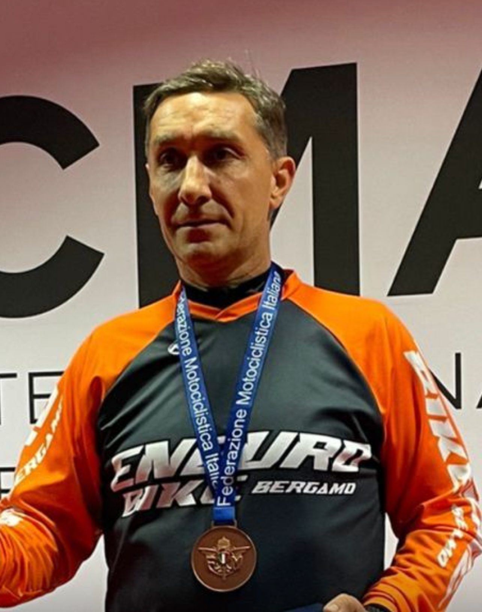
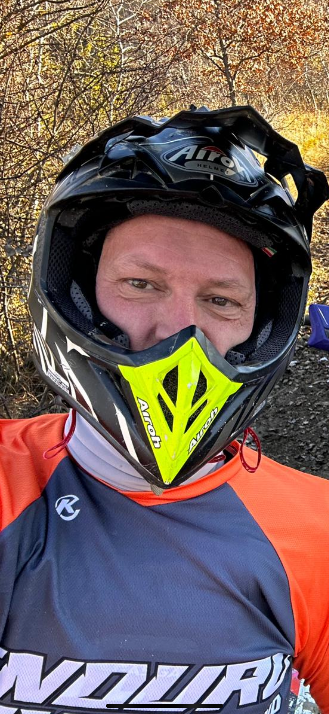
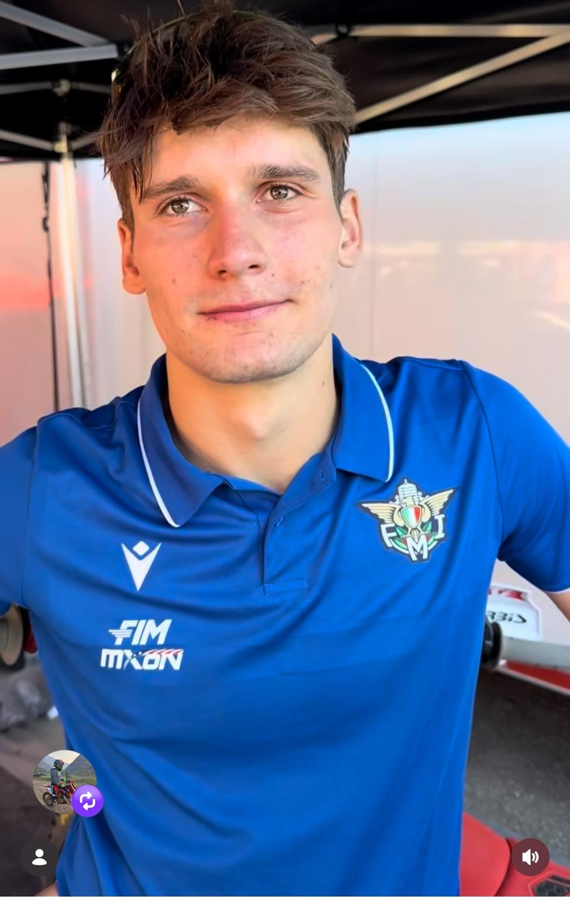

Vivi l’emozione dell’enduro in Bergamasca

Fondatore

Fondatore
Enduro Bike BG nasce dalla passione e dalla visione di Tomaso Giupponi e Alessandro Fornari, fondatori e appassionati di sport e motori, che hanno dato vita a un’Associazione Sportiva Dilettantistica (ASD) con un obiettivo chiaro: trasmettere ai giovani i valori dello sport, della disciplina e del divertimento su due ruote.
La nostra ASD si avvale di istruttori qualificati della Federazione Ciclistica Italiana e di guide cicloturistiche certificate, offrendo attività strutturate, sicure e formative dedicate al mondo della MTB, delle e-bike, delle moto elettriche e delle moto endotermiche.
Crediamo nello sport come strumento di crescita personale e sociale. Enduro Bike BG si impegna a:
Il nostro focus è rivolto in particolare ai giovani, accompagnandoli in un percorso di apprendimento progressivo, divertente e sicuro.

Pilota Ducati – MXGP
Il nostro Ambassador è Andrea Bonacorsi, pilota Ducati, pilota DOC bergamasco e punto di riferimento del motocross internazionale.
Andrea è numero uno nel ranking mondiale MXGP 2025 e protagonista assoluto del Campionato del Mondo MXGP, incarnando perfettamente i valori di passione, impegno, talento e determinazione che Enduro Bike BG vuole trasmettere alle nuove generazioni.
Enduro Bike BG organizza corsi di dirt bike, e-bike e moto elettriche a partire dai 3 anni di età, con programmi studiati per ogni livello, dal principiante all’agonista.
Vengono inoltre organizzati tour personalizzati ed escursioni per privati ed aziende, con il supporto delle nostre guide cicloturistiche certificate FCI. Per facilitare l’accesso alle attività, offriamo la possibilità di noleggiare direttamente presso la nostra struttura sia e-bike, dirt bike sia moto elettriche, garantendo mezzi sicuri e adatti a ogni fascia d’età.
Ideale per percorsi tecnici e discese mozzafiato.
Perfetta per lunghe escursioni e salite impegnative.
Ottimizzata per velocità e performance.
Ottimizzata per pump Track.
Perfetta per cominciare
Perfetta per bambini alle prime armi
Design innovativo e performance elevate.
PUMP TRACK - E-CROSS - MTB ESCURSIONS
E-CROSS - ENDURO EVENTS
Un percorso spettacolare immerso nella natura.
Un'avventura tra salti e passaggi tecnici.
Un circuito panoramico con vista mozzafiato.
Email: info@endurobikebergamo.it
Telefono: +39 035 1234567
Indirizzo: Via delle Orobie, 12, Bergamo
Seguici sui Social